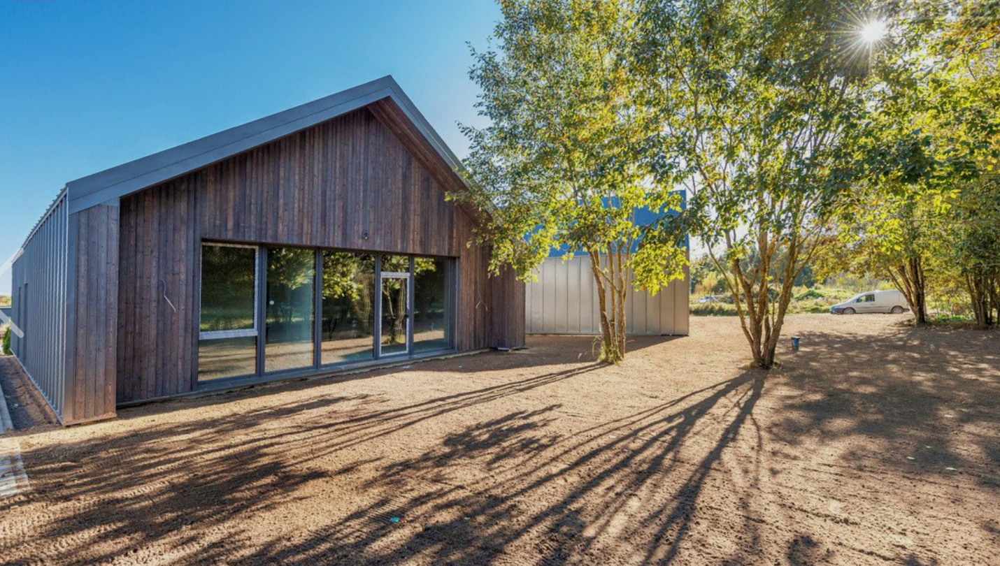

NUOMA · NAMAS
NUOMA · NAMAS
NUOMA · NAMAS · VILNIAUS PRIEMIESTIS
Lėtesni rytai už miesto

APIE OBJEKTĄ
Vieta Jūsų planams.
Nuomojamas namas su privačiu kiemu ir terasa ramiems vakarams.
Šis aprašymas skirtas dizaino šablono peržiūrai. Tikrame skelbime čia pateikiama išsami informacija apie objekto būklę, įrengimą, aplinką ir nuomos sąlygas.
Pasiteirauti apie objektąVIETA IR APLINKA
Vilnius
Pateiktas vietovės žemėlapis. Tikslus objekto adresas šiame pavyzdiniame skelbime nepatvirtintas.
Jei žemėlapis neįkeliamas, atidarykite jį atskirame lange.
DAUGIAU GALIMYBIŲ